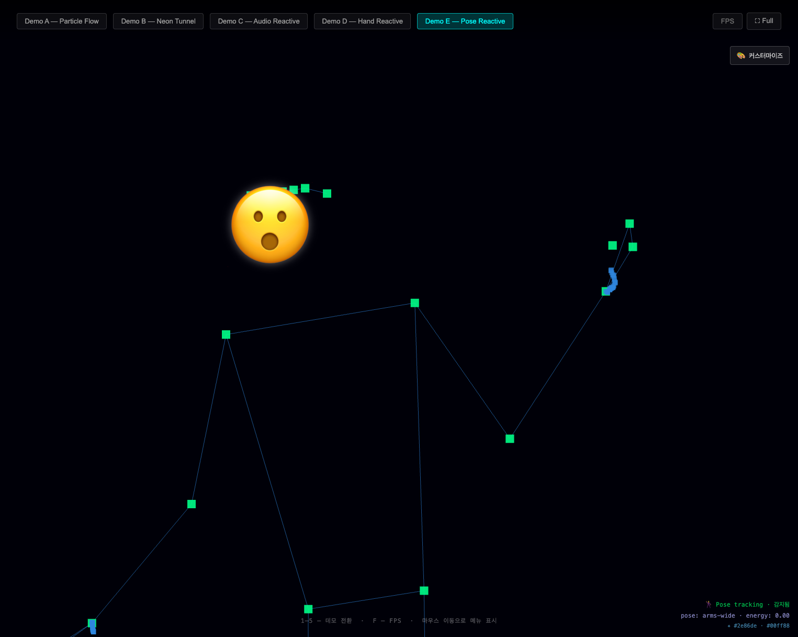
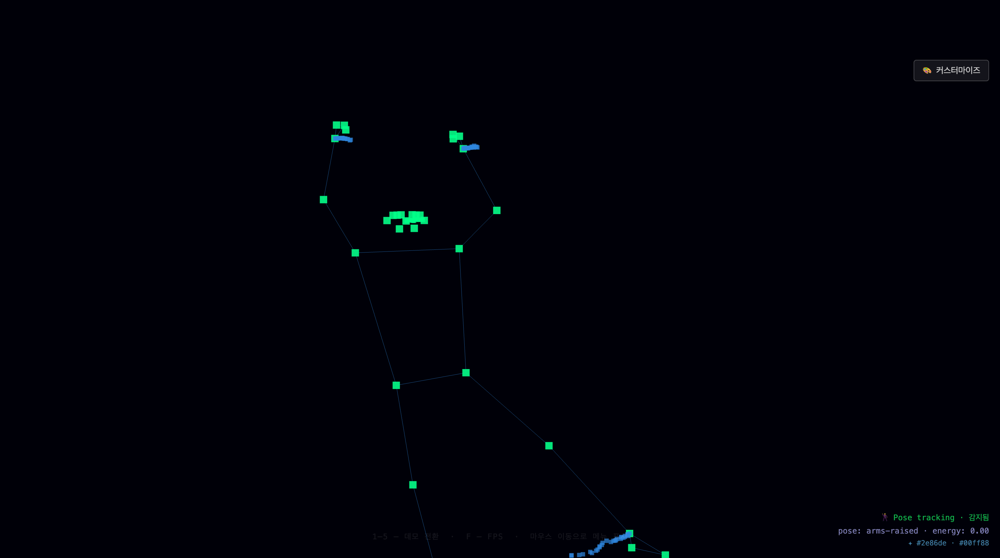
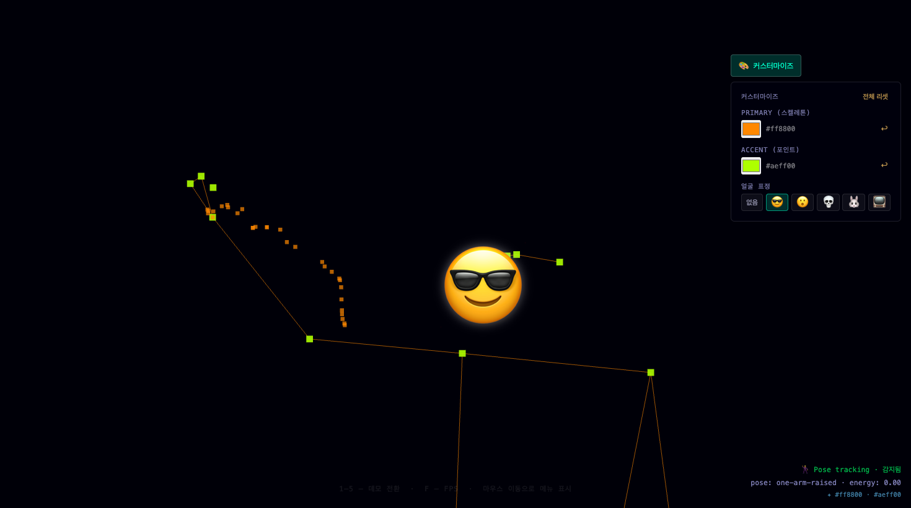
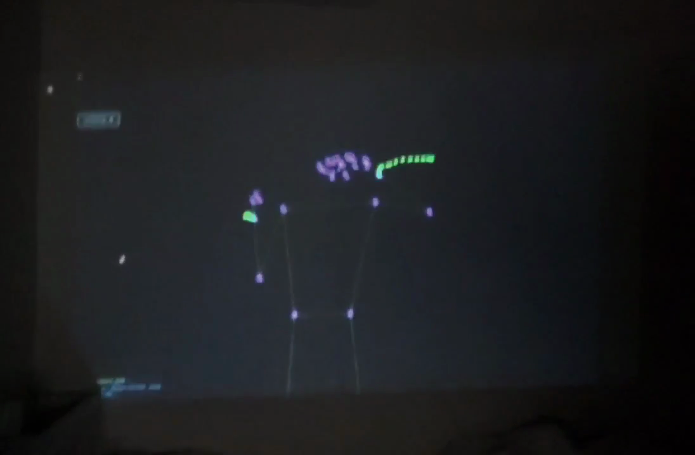
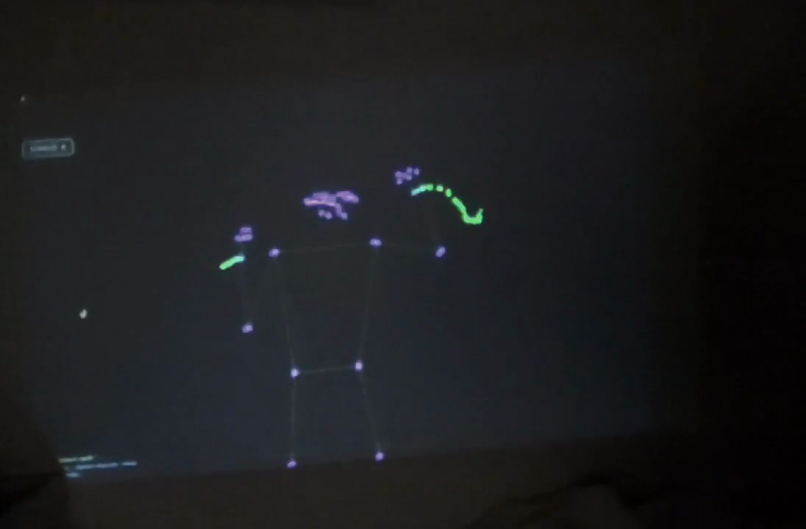

전신 모션 + 생성형 AI 비주얼 연동
2026-06-02
MediaPipe Pose로 전신 관절 33개를 추적하여 Demo E를 구현하고,
LLM 기반 비주얼 파라미터 생성으로 AI 반응형 연출을 도입한다.
스코프 & 수용 기준
스코프 (5개 확정)
classifyPose)수용 기준 (5개 확정)
pnpm test 0 failures| # | 결정 내용 | 담당 |
|---|---|---|
| 1 | Sprint projection-art/3 스코프 6개 항목 확정 | 전원 |
| 2 | 수용 기준 6개 항목 확정 | 전원 |
| 3 |
MediaPipe Pose Web Worker 오프로딩 여부 메인 스레드 우선 시도 → 실측 후 드랍 발생 시 Worker 전환 |
PERF FE |
| 4 |
생성형 AI 비주얼 파라미터 생성 방식 이벤트 트리거 배치 — 포즈 변화 임계값 초과 시만 호출, 디바운스 1200ms 적용 |
AI PM |
| 5 |
CSS matrix3d 키스톤 보정 적용 범위기존 matrix3d 유지하며 CSS 보정 경로를 우선 적용
|
PERF FE |
기술 스택
| 영역 | 선택 |
|---|---|
| 빌드 | Vite + React 18 + TypeScript |
| 3D 그래픽 | @react-three/fiber (Three.js R3F) |
| 모션 추적 | @mediapipe/tasks-vision — PoseLandmarker · 33관절 · CDN WASM |
| AI 연동 | OpenRouter DeepSeek API — 이벤트 트리거 배치, 디바운스 1200ms |
| 키스톤 | CSS matrix3d 기반 보정 |
| 테스트 | Vitest — 120 tests · 16 test files |
아키텍처 흐름
FE (5/5)
classifyPose)AI (2/2)
QA (2/2)
pnpm test 0 failures 확인 — 120 tests · 16 test filesPERF (2/2)
이월 항목 (2개) — 실기기 시연 필요
리스크 (3개)
poseDebounceMs)
pose-1실시간 관절 반응/이모지 오버레이

capture-1전신 비주얼 반응, 배경 보정 확인

capture-2트레일 강도 변화 및 반응 커브 확인

0.5s프로젝터 연결 직후 포즈 추적 시작

1.6s오버레이 및 트레일 반응 연동 확인
측정 해석
감사합니다